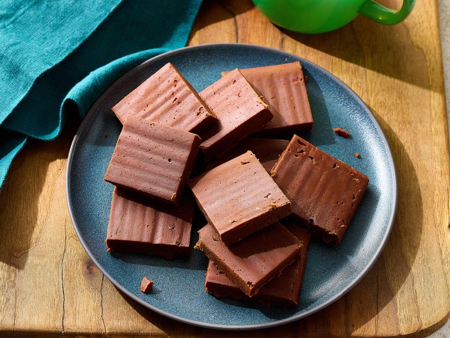

Chocolate Fudge
Home

Description
Chocolate fudge is a rich, smooth, and indulgent dessert made with
chocolate, condensed milk, and butter. It has a creamy texture that melts
in your mouth and a deep chocolate flavor that satisfies any sweet craving.
Fudge is a popular treat during holidays, parties, or as a quick homemade
sweet. The best part about this recipe is that it requires only a handful
of ingredients and very little time to prepare. With just a saucepan and a
few minutes of stirring, you'll have a delicious batch of fudge that looks
impressive but is incredibly easy to make.
Ingredients
- 2 cups semi-sweet chocolate chips (or chopped chocolate)
- 1 can (14 oz) sweetened condensed milk
- 2 tablespoons unsalted butter
- 1 teaspoon vanilla extract
- A pinch of salt (optional, to balance sweetness)
- Chopped nuts (optional, for extra crunch)
Steps
- Prepare a square baking pan by lining it with parchment paper.
- In a heavy-bottomed saucepan, combine chocolate chips, condensed milk, and butter.
- Place the saucepan over low heat and stir continuously to avoid burning the chocolate.
- Once the mixture is completely melted and smooth, remove from heat.
- Stir in vanilla extract and a pinch of salt. If using nuts, fold them in now.
- Pour the mixture into the prepared pan and spread it evenly with a spatula.
- Let it cool at room temperature for a few minutes, then refrigerate for at least 2 hours.
- Once firm, remove from the pan, cut into bite-sized squares, and serve.
- Store leftovers in an airtight container in the refrigerator for up to a week.